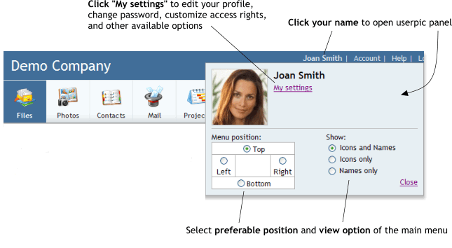

|
Your personal settingsIn order to edit your personal information (contact details, user settings, your password) click your name in the top-right corner of the WebAsyst window and then the "My Settings" link. 
|
|
|
Contact informationThis page displays your name, photo, your phone numbers, and other contact details. To change those data, simply click the desired field or use the "Edit" link in the right-hand pane. Note: Keep in mind that you may not be able to edit your details, if the administrator of the WebAsyst account has not assigned the corresponding level access to you. Sections "Notes" and "User account", which are described below, may be inaccessible to you.
|
|
|
NotesUse the "Notes" link in the right-hand pane to open a section which is useful for storing additional textual information about yourself. Use it as a simple online notepad. An unlimited number of records may be saved here. In order to add a note, enter the desired text in the appropriate field and click "Save". The new note will be added to the list. To change or delete a note, use the "Edit" and "Delete" links. Note: The administrator of the WebAsyst account always has access to all users' notes. If the administrator adds some notes about you, you will see them in your "Notes" section, provided that you have access to it.
|
|
|
User accountThe "User account" link in the right-hand pane opens a screen which contains your account user settings. If you have corresponding access rights, you can change the following settings here: - Language: choose the interface language.
- Time zone: select the time zone of your location.
- Daylight saving time: enable this option, if daylight saving time is applied within the selected time zone.
- User local time: this value is not editable and depends on the two previous parameters.
- Start Page: choose which section of the WebAsyst account should open each time when you log in.
- Storage space (KB): enter the maximum limit of storage space (in KB) into which you are allowed to upload files using all WebAsyst services. Leave this field empty to remove any limitations.
- SMS messages: enter the maximum limit of the number of SMS messages which you may send. Leave this field empty to remove any limitations.
Note: To change any of the above listed parameters, click its value or use the "Edit user settings" link on the right.
If you are the administrator of your WebAsyst account and have access to the "Users" section, then in addition to the ability to edit your personal account settings, you also may change your access rights as well as include yourself in user groups. The "Groups" and "Access rights" tabs function in the same way that similar tabs work on the user configuration page in "Users". For more details on how to set up access rights and manage user groups, refer to the manual for the "Users" service. |
|